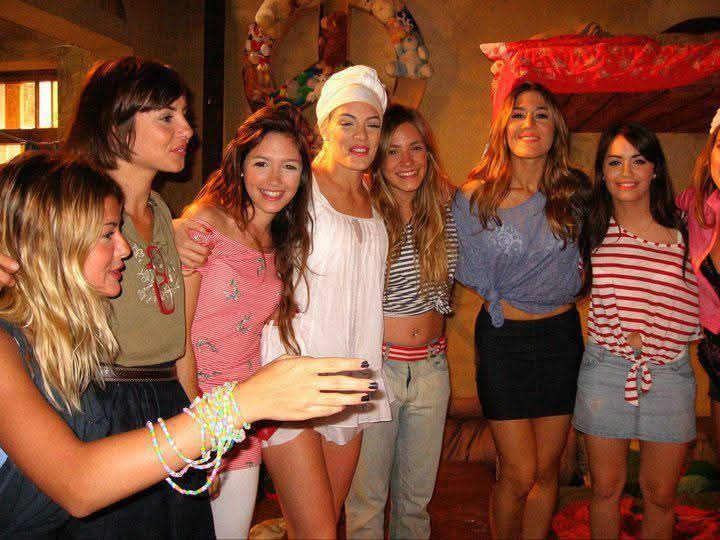
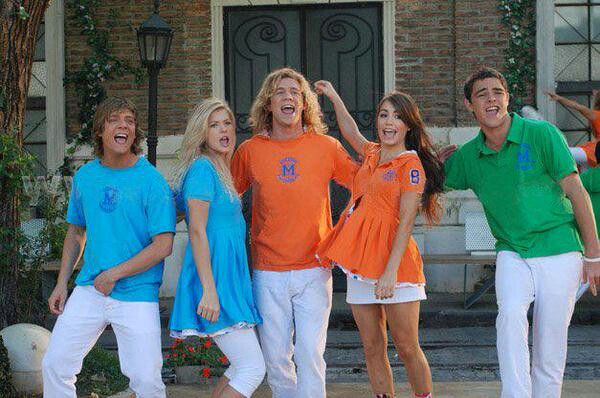
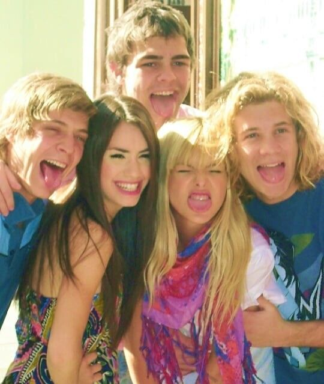
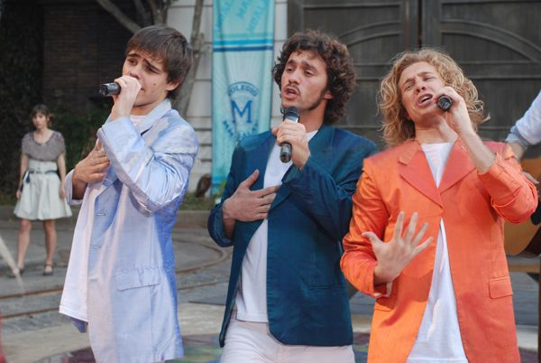
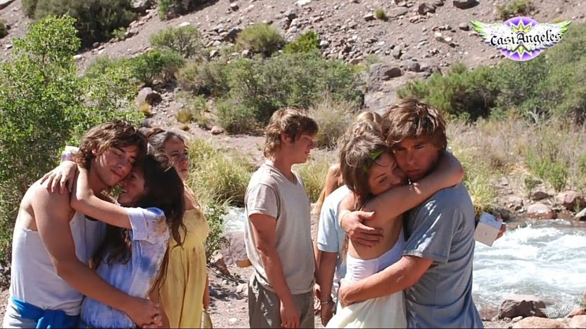

Temporada 3





La tercera temporada de Casi Ángeles se emitió en 2009 y se tituló “Salvar la Paz”. Luego de abrir el Libro de los Siete Candados, los chicos y Justina aparecen 22 años en el futuro.
Allí descubren que tienen una nueva misión: proteger y salvar a Paz, la hija de Nicolás Bauer y Cielo Mágico. Paz vive en el año 2030 y forma parte de una nueva etapa de la historia vinculada al colegio Mandalay.
Camilo Estrella llega para convertirse en el nuevo director del Mandalay y desarrolla una relación muy importante con Paz. Al mismo tiempo, Juan Cruz intenta eliminarla para poder volver a Eudamón.
Los protagonistas también deben enfrentarse a un gobierno autoritario encabezado por la Jefa de Ministros. La temporada incorpora temas como la libertad de expresión, la ecología, la conciencia social y el pensamiento lateral.
Los viajes en el tiempo adquieren un papel central y los personajes descubren que forman parte de un círculo de guardianes encargado de proteger a Paz y evitar que Juan Cruz cambie el futuro.